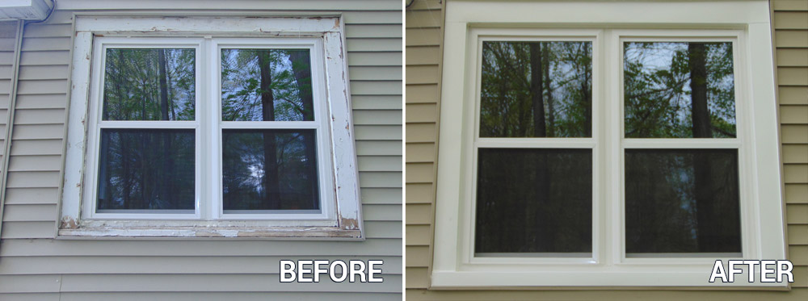

Douglas County Glass
We don’t only make things beautiful. We make them work great as well.
- Broken or cracked glass
- Foggy IGUs or thermopanes
- Window glass with grids
- Sash balance replacements for windows
- Commercial window and door replacement with custom fabrication.